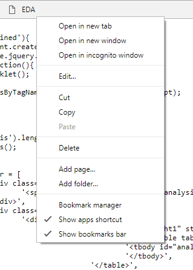
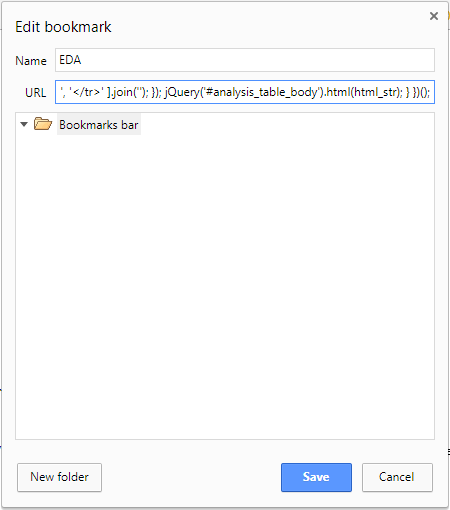

Let's add the EtherDelta Analysis (EDA) bookmarklet
-
Drag this EDA bookmarklet to your bookmarks bar.
- Right-click on newly created bookmarklet, and click edit

- Copy + Paste the contents of bookmarklet.js into the above bookmarklet URL (replace previous URL entirely)

- Click Save, and you're done